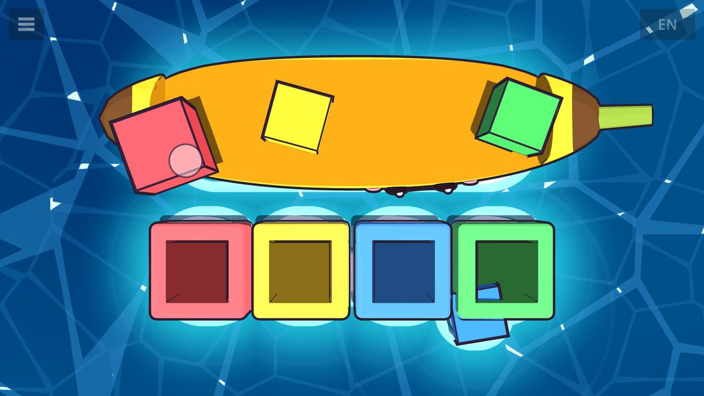
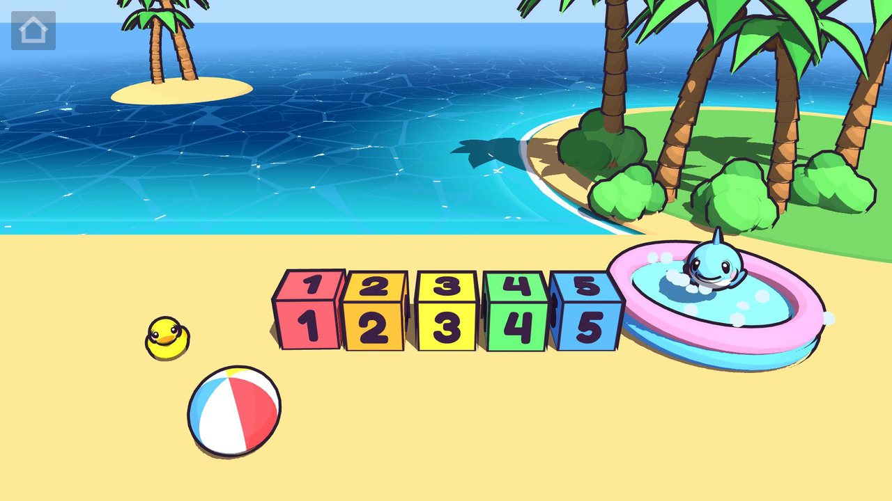

Boop Bay is a gentle little learning game for toddlers, made by a dad for his kid. Little fingers drag toys off a cheerful banana boat and drop them into the matching holes, while a friendly voice names each one in English, Chinese or Spanish, and a little shark swims by to cheer after every round. It's free, with no ads and no in-app purchases, and it works completely offline, for ages about 2–4.
- Free, with no ads and no in-app purchases
- Works fully offline
- English, Chinese and Spanish
- No accounts, no chat and no social media links
- Collects no personal information
See it in action
Speaks three languages
Every word in Boop Bay is spoken in English, Mandarin Chinese or Spanish. Here's the same moment of the fruit lesson in all three. Turn the sound on!
The language labels in the corner are only in this video, not in the game.
Six ways to play
-

Colors
Red, yellow, blue and green blocks go into the holes of the same color.
-

Shapes
A square, circle, triangle and star each find their own shaped hole.
-

Fruit
Chunky apple, banana, strawberry and grape pieces fit fruit-shaped holes, like a wooden puzzle.
-

Numbers
Big pink numbers 1, 2 and 3 drop into number-shaped holes as the voice says each one.
-

Counting ducks
Little boats carrying one to five rubber ducks dock at the matching number: count to 3, then count to 5.
-

Playground
A beach sandbox with musical number blocks, a beach ball, gentle waves and a rubber duck that grows when you line the blocks up 1 to 5 or stack them. There's also a little shark in the paddling pool, and a secret hidden in the palm trees.
Support
Questions, problems or feedback? Email stephen.a.boileau@gmail.com and I'll get back to you.
Privacy
Boop Bay doesn't collect, store on any server, or share any personal information. Read the full Boop Bay privacy policy.